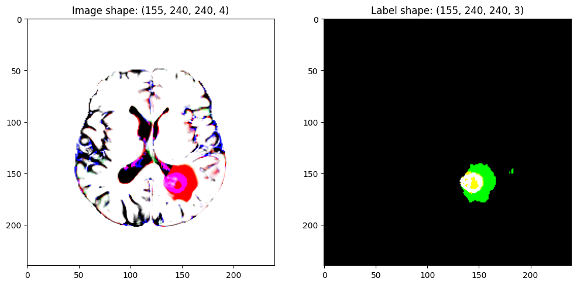
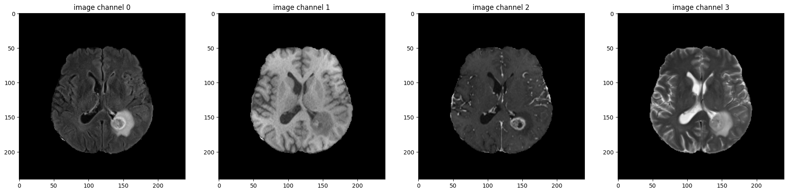
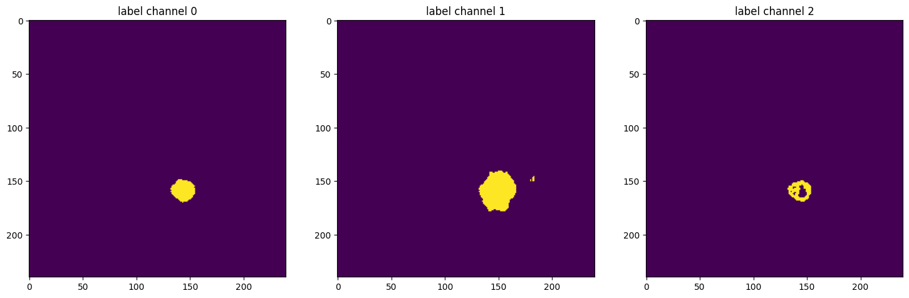
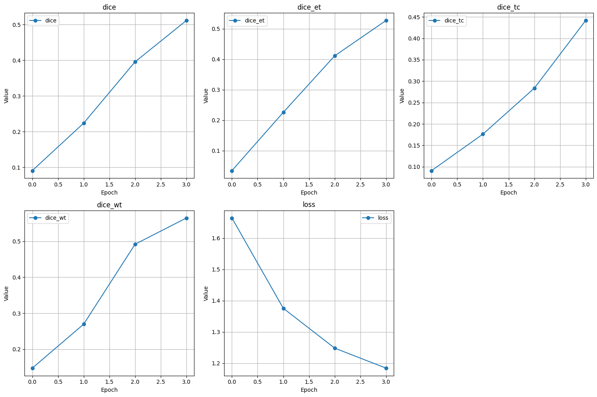
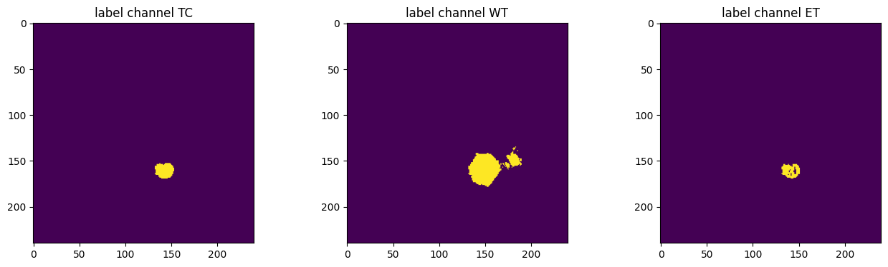
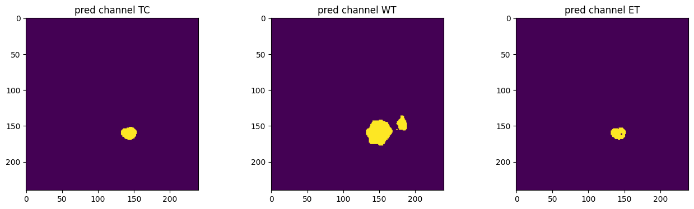
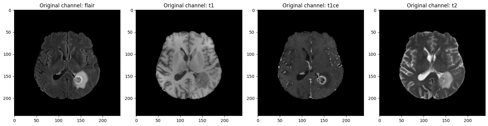
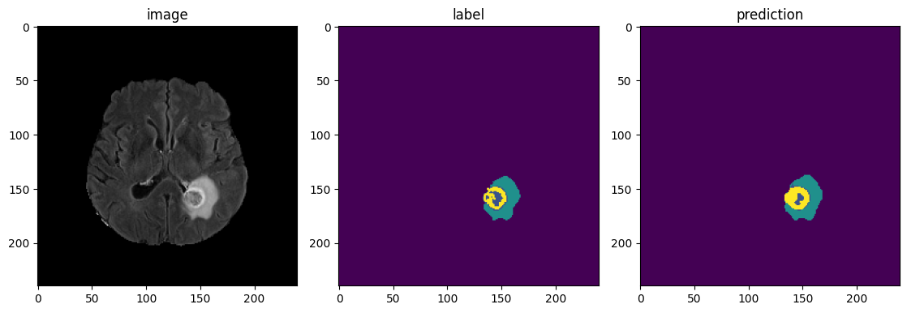

3D Multimodal Brain Tumor Segmentation
Author: Mohammed Innat
Date created: 2026/02/02
Last modified: 2026/02/02
Description: Implementing 3D semantic segmentation pipeline for medical imaging.

Brain tumor segmentation is a core task in medical image analysis, where the goal is to automatically identify and label different tumor sub-regions from 3D MRI scans. Accurate segmentation helps clinicians with diagnosis, treatment planning, and disease monitoring. In this tutorial, we focus on multimodal MRI-based brain tumor segmentation using the widely adopted BraTS (Brain Tumor Segmentation) dataset.
The BraTS Dataset
The BraTS dataset provides multimodal 3D brain MRI scans, released as NIfTI files (.nii.gz). For each patient, four MRI modalities are available:
- T1 – native T1-weighted MRI
- T1Gd – post-contrast T1-weighted MRI
- T2 – T2-weighted MRI
- T2-FLAIR – Fluid Attenuated Inversion Recovery MRI
These scans are collected using different scanners and clinical protocols from 19 institutions, making the dataset diverse and realistic. More details about the dataset can be found in the official BraTS documentation.
Segmentation Labels
Each scan is manually annotated by one to four expert raters, following a standardized annotation protocol and reviewed by experienced neuroradiologists. The segmentation masks contain the following tumor sub-regions:
- NCR / NET (label 1) – Necrotic and non-enhancing tumor core
- ED (label 2) – Peritumoral edema
- ET (label 4) – GD-enhancing tumor
- 0 – Background (non-tumor tissue)
The data are released after preprocessing:
- All modalities are co-registered
- Resampled to
1 mm³isotropic resolution - Skull-stripped for consistency
Dataset Format and TFRecord Conversion
The original BraTS scans are provided in .nii format and can be accessed from Kaggle here. To enable efficient training pipelines, we convert the NIfTI files into TFRecord format:
- The conversion process is documented here
- The preprocessed TFRecord dataset is available here
- Each TFRecord file contains up to 20 cases
Since BraTS does not provide publicly available ground-truth labels for validation or test sets, we will hold out a subset of TFRecord files from training for validation purposes.
What This Tutorial Covers
In this tutorial, we provide a step-by-step, end-to-end workflow for brain tumor segmentation using medicai, a Keras-based medical imaging library with multi-backend support. We will walk through:
- Loading the Dataset
- Read TFRecord files that contain
image,label, andaffinematrix information. - Build efficient data pipelines using thetf.dataAPI for training and evaluation. - Medical Image Preprocessing
- Apply image transformations provided by
medicaito prepare the data for model input. - Model Building
- Construct a 3D segmentation model with
SwinUNETRYou can also experiment with other available 3D architectures, includingUNETR,SegFormer, andUNETR++.. - Loss and Metrics Definition - Using Dice-based loss functions and segmentation metrics tailored for medical imaging
- Model Evaluation - Performing inference on large 3D volumes using sliding window inference - Computing per-class evaluation metrics
- Visualization of Results - Visualizing predicted segmentation masks for qualitative analysis
By the end of this tutorial, you will have a complete brain tumor segmentation pipeline, from data loading and preprocessing to model training, evaluation, and visualization using modern 3D deep learning techniques and the medicai framework.
Installation
We will install the following packages: kagglehub for downloading the dataset from
Kaggle, and medicai for accessing specialized methods for medical imaging, including 3D transformations, model architectures, loss functions, metrics, and other essential components.
!pip install kagglehub -qU
!pip install git+https://github.com/innat/medic-ai.git -qU
import os
import warnings
warnings.filterwarnings("ignore")
import shutil
import kagglehub
from IPython.display import clear_output
if "KAGGLE_USERNAME" not in os.environ or "KAGGLE_KEY" not in os.environ:
kagglehub.login()
VBox(children=(HTML(value='<center> <img\nsrc=https://www.kaggle.com/static/images/site-logo.png\nalt=\'Kaggle…
Download the dataset from kaggle.
dataset_id = "ipythonx/brats2020"
destination_path = "brats2020_subset"
os.makedirs(destination_path, exist_ok=True)
# Download the 3 shards: 0 and 1st for training set, 36th for validation set.
for i in [0, 1, 36]:
filename = f"training_shard_{i}.tfrec"
print(f"Downloading {filename}...")
path = kagglehub.dataset_download(dataset_id, path=filename)
shutil.move(path, destination_path)
# Comment this line to keep the logs visible
clear_output()
Imports
os.environ["KERAS_BACKEND"] = "jax" # tensorflow, torch, jax
import numpy as np
import pandas as pd
import keras
from keras import ops
import tensorflow as tf
from matplotlib import pyplot as plt
import matplotlib.animation as animation
from matplotlib.colors import ListedColormap
from medicai.callbacks import SlidingWindowInferenceCallback
from medicai.losses import BinaryDiceCELoss
from medicai.metrics import BinaryDiceMetric
from medicai.models import SwinUNETR
from medicai.transforms import (
Compose,
CropForeground,
NormalizeIntensity,
RandFlip,
RandShiftIntensity,
RandSpatialCrop,
TensorBundle,
)
from medicai.utils.inference import SlidingWindowInference
# enable mixed precision
keras.mixed_precision.set_global_policy("mixed_float16")
# reproducibility
keras.utils.set_random_seed(101)
print(
f"keras backend: {keras.config.backend()}\n"
f"keras version: {keras.version()}\n"
f"tensorflow version: {tf.__version__}\n"
)
WARNING: All log messages before absl::InitializeLog() is called are written to STDERR
E0000 00:00:1770323093.743310 8167 cuda_dnn.cc:8579] Unable to register cuDNN factory: Attempting to register factory for plugin cuDNN when one has already been registered
E0000 00:00:1770323093.750920 8167 cuda_blas.cc:1407] Unable to register cuBLAS factory: Attempting to register factory for plugin cuBLAS when one has already been registered
W0000 00:00:1770323093.769755 8167 computation_placer.cc:177] computation placer already registered. Please check linkage and avoid linking the same target more than once.
W0000 00:00:1770323093.769779 8167 computation_placer.cc:177] computation placer already registered. Please check linkage and avoid linking the same target more than once.
W0000 00:00:1770323093.769782 8167 computation_placer.cc:177] computation placer already registered. Please check linkage and avoid linking the same target more than once.
W0000 00:00:1770323093.769784 8167 computation_placer.cc:177] computation placer already registered. Please check linkage and avoid linking the same target more than once.
keras backend: jax
keras version: 3.13.2
tensorflow version: 2.19.1
Create Multi-label Brain Tumor Labels
The BraTS segmentation task involves multiple tumor sub-regions, and it is formulated as a multi-label segmentation problem. The label combinations are used to define the following clinical regions of interest:
- Tumor Core (TC): label = 1 or 4
- Whole Tumor (WT): label = 1 or 2 or 4
- Enhancing Tumor (ET): label = 4
These region-wise groupings allow for evaluation across different tumor structures relevant for clinical assessment and treatment planning. A sample view is shown below, figure taken from BraTS-benchmark paper.

Managing Multi-Label Outputs with TensorBundle
To organize and manage these multi-label segmentation targets, we will implement a custom transformation using TensorBundle from medicai. The TensorBundle is a lightweight container class designed to hold:
- A dictionary of tensors (e.g., images, labels)
- Optional metadata associated with those tensors (e.g., affine matrices, spacing, original shapes)
This design allows data and metadata to be passed together through the transformation pipeline in a structured and consistent way. Each medicai transformation expects inputs to be organized as key:value pairs, for example:
meta = {"affine": affine}
data = {"image": image, "label": label}
Using TensorBundle makes it easier to apply complex medical imaging transformations while preserving spatial and anatomical information throughout preprocessing and model inference.
class ConvertToMultiChannelBasedOnBratsClasses:
"""
Convert labels to multi channels based on BRATS classes using TensorFlow.
Label definitions:
- 1: necrotic and non-enhancing tumor core
- 2: peritumoral edema
- 4: GD-enhancing tumor
Output channels:
- Channel 0 (TC): Tumor core (labels 1 or 4)
- Channel 1 (WT): Whole tumor (labels 1, 2, or 4)
- Channel 2 (ET): Enhancing tumor (label 4)
"""
def __init__(self, keys):
self.keys = keys
def __call__(self, inputs):
if isinstance(inputs, dict):
inputs = TensorBundle(inputs)
for key in self.keys:
data = inputs[key]
# TC: label == 1 or 4
tc = tf.logical_or(tf.equal(data, 1), tf.equal(data, 4))
# WT: label == 1 or 2 or 4
wt = tf.logical_or(tc, tf.equal(data, 2))
# ET: label == 4
et = tf.equal(data, 4)
stacked = tf.stack(
[
tf.cast(tc, tf.float32),
tf.cast(wt, tf.float32),
tf.cast(et, tf.float32),
],
axis=-1,
)
inputs[key] = stacked
return inputs
Transformation
Each medicai transformation expects the input to have the shape (depth, height, width, channel). The original .nii (and converted .tfrecord) format contains the input shape of (height, width, depth). To make it compatible with medicai, we need to re-arrange the shape axes.
def rearrange_shape(sample):
# unpack sample
image = sample["image"]
label = sample["label"]
affine = sample["affine"]
# special case
image = tf.transpose(image, perm=[2, 1, 0, 3]) # whdc -> dhwc
label = tf.transpose(label, perm=[2, 1, 0]) # whd -> dhw
cols = tf.gather(affine, [2, 1, 0], axis=1) # (whd) -> (dhw)
affine = tf.concat([cols, affine[:, 3:]], axis=1)
# update sample with new / updated tensor
sample["image"] = image
sample["label"] = label
sample["affine"] = affine
return sample
Each transformation class of medicai expects input as either a dictionary or a TensorBundle object, as discussed earlier. When a dictionary of input data (along with metadata) is passed, it is automatically wrapped into a TensorBundle instance. The examples below demonstrate how transformations are used in this way.
num_classes = 3
epochs = 4
input_shape = (96, 96, 96, 4)
def train_transformation(sample):
meta = {"affine": sample["affine"]}
data = {"image": sample["image"], "label": sample["label"]}
pipeline = Compose(
[
ConvertToMultiChannelBasedOnBratsClasses(keys=["label"]),
CropForeground(
keys=("image", "label"),
source_key="image",
k_divisible=input_shape[:3],
),
RandSpatialCrop(
keys=["image", "label"], roi_size=input_shape[:3], random_size=False
),
RandFlip(keys=["image", "label"], spatial_axis=[0], prob=0.5),
RandFlip(keys=["image", "label"], spatial_axis=[1], prob=0.5),
RandFlip(keys=["image", "label"], spatial_axis=[2], prob=0.5),
NormalizeIntensity(keys=["image"], nonzero=True, channel_wise=True),
RandShiftIntensity(keys=["image"], offsets=0.10, prob=1.0),
]
)
result = pipeline(data, meta)
return result["image"], result["label"]
def val_transformation(sample):
meta = {"affine": sample["affine"]}
data = {"image": sample["image"], "label": sample["label"]}
pipeline = Compose(
[
ConvertToMultiChannelBasedOnBratsClasses(keys=["label"]),
NormalizeIntensity(keys=["image"], nonzero=True, channel_wise=True),
]
)
result = pipeline(data, meta)
return result["image"], result["label"]
The tfrecord parser
def parse_tfrecord_fn(example_proto):
feature_description = {
# Image raw data
"flair_raw": tf.io.FixedLenFeature([], tf.string),
"t1_raw": tf.io.FixedLenFeature([], tf.string),
"t1ce_raw": tf.io.FixedLenFeature([], tf.string),
"t2_raw": tf.io.FixedLenFeature([], tf.string),
"label_raw": tf.io.FixedLenFeature([], tf.string),
# Image shape
"flair_shape": tf.io.FixedLenFeature([3], tf.int64),
"t1_shape": tf.io.FixedLenFeature([3], tf.int64),
"t1ce_shape": tf.io.FixedLenFeature([3], tf.int64),
"t2_shape": tf.io.FixedLenFeature([3], tf.int64),
"label_shape": tf.io.FixedLenFeature([3], tf.int64),
# Affine matrices (4x4 = 16 values)
"flair_affine": tf.io.FixedLenFeature([16], tf.float32),
"t1_affine": tf.io.FixedLenFeature([16], tf.float32),
"t1ce_affine": tf.io.FixedLenFeature([16], tf.float32),
"t2_affine": tf.io.FixedLenFeature([16], tf.float32),
"label_affine": tf.io.FixedLenFeature([16], tf.float32),
# Voxel Spacing (pixdim)
"flair_pixdim": tf.io.FixedLenFeature([8], tf.float32),
"t1_pixdim": tf.io.FixedLenFeature([8], tf.float32),
"t1ce_pixdim": tf.io.FixedLenFeature([8], tf.float32),
"t2_pixdim": tf.io.FixedLenFeature([8], tf.float32),
"label_pixdim": tf.io.FixedLenFeature([8], tf.float32),
# Filenames
"flair_filename": tf.io.FixedLenFeature([], tf.string),
"t1_filename": tf.io.FixedLenFeature([], tf.string),
"t1ce_filename": tf.io.FixedLenFeature([], tf.string),
"t2_filename": tf.io.FixedLenFeature([], tf.string),
"label_filename": tf.io.FixedLenFeature([], tf.string),
}
example = tf.io.parse_single_example(example_proto, feature_description)
# Decode image and label data
flair = tf.io.decode_raw(example["flair_raw"], tf.float32)
t1 = tf.io.decode_raw(example["t1_raw"], tf.float32)
t1ce = tf.io.decode_raw(example["t1ce_raw"], tf.float32)
t2 = tf.io.decode_raw(example["t2_raw"], tf.float32)
label = tf.io.decode_raw(example["label_raw"], tf.float32)
# Reshape to original dimensions
flair = tf.reshape(flair, example["flair_shape"])
t1 = tf.reshape(t1, example["t1_shape"])
t1ce = tf.reshape(t1ce, example["t1ce_shape"])
t2 = tf.reshape(t2, example["t2_shape"])
label = tf.reshape(label, example["label_shape"])
# Decode affine matrices
flair_affine = tf.reshape(example["flair_affine"], (4, 4))
t1_affine = tf.reshape(example["t1_affine"], (4, 4))
t1ce_affine = tf.reshape(example["t1ce_affine"], (4, 4))
t2_affine = tf.reshape(example["t2_affine"], (4, 4))
label_affine = tf.reshape(example["label_affine"], (4, 4))
# add channel axis
flair = flair[..., None]
t1 = t1[..., None]
t1ce = t1ce[..., None]
t2 = t2[..., None]
image = tf.concat([flair, t1, t1ce, t2], axis=-1)
return {
"image": image,
"label": label,
"affine": flair_affine, # Since affine is the same for all
}
Dataloader
def train_dataloader(
tfrecord_datalist,
batch_size=1,
shuffle_buffer=100,
):
dataset = tf.data.TFRecordDataset(tfrecord_datalist)
dataset = dataset.shuffle(shuffle_buffer)
dataset = dataset.map(
parse_tfrecord_fn,
num_parallel_calls=tf.data.AUTOTUNE,
)
dataset = dataset.map(
rearrange_shape,
num_parallel_calls=tf.data.AUTOTUNE,
)
dataset = dataset.map(
train_transformation,
num_parallel_calls=tf.data.AUTOTUNE,
)
dataset = dataset.batch(
batch_size,
drop_remainder=True,
)
dataset = dataset.prefetch(tf.data.AUTOTUNE)
return dataset
def val_dataloader(
tfrecord_datalist,
batch_size=1,
):
dataset = tf.data.TFRecordDataset(tfrecord_datalist)
dataset = dataset.map(
parse_tfrecord_fn,
num_parallel_calls=tf.data.AUTOTUNE,
)
dataset = dataset.map(
rearrange_shape,
num_parallel_calls=tf.data.AUTOTUNE,
)
dataset = dataset.map(
val_transformation,
num_parallel_calls=tf.data.AUTOTUNE,
)
dataset = dataset.batch(batch_size)
dataset = dataset.prefetch(tf.data.AUTOTUNE)
return dataset
The training batch size can be set to more than 1 depending on the environment and available resources. However, we intentionally keep the validation batch size as 1 to handle variable-sized samples more flexibly. While padded or ragged batches are alternative options, a batch size of 1 ensures simplicity and consistency during evaluation, especially for 3D medical data.
tfrecord_pattern = "brats2020_subset/training_shard_*.tfrec"
datalist = sorted(
tf.io.gfile.glob(tfrecord_pattern),
key=lambda x: int(x.split("_")[-1].split(".")[0]),
)
train_datalist = datalist[:-1]
val_datalist = datalist[-1:]
print(len(train_datalist), len(val_datalist))
train_ds = train_dataloader(train_datalist, batch_size=1)
val_ds = val_dataloader(val_datalist, batch_size=1)
2 1
I0000 00:00:1770323097.105766 8167 gpu_device.cc:2019] Created device /job:localhost/replica:0/task:0/device:GPU:0 with 13764 MB memory: -> device: 0, name: Tesla T4, pci bus id: 0000:00:04.0, compute capability: 7.5
WARNING:tensorflow:From /home/jupyter/py311/lib/python3.11/site-packages/tensorflow/python/util/deprecation.py:660: calling map_fn_v2 (from tensorflow.python.ops.map_fn) with dtype is deprecated and will be removed in a future version.
Instructions for updating:
Use fn_output_signature instead
sanity check: Fetch a single validation sample to inspect its shape and values.
val_x, val_y = next(iter(val_ds))
test_image = val_x.numpy().squeeze()
test_mask = val_y.numpy().squeeze()
print(test_image.shape, test_mask.shape, np.unique(test_mask))
print(test_image.min(), test_image.max())
(155, 240, 240, 4) (155, 240, 240, 3) [0. 1.]
-3.8107734 12.865826
sanity check: Visualize the middle slice of the image and its corresponding label.
slice_no = test_image.shape[0] // 2
fig, (ax1, ax2) = plt.subplots(1, 2, figsize=(12, 6))
ax1.imshow(test_image[slice_no], cmap="gray")
ax1.set_title(f"Image shape: {test_image.shape}")
ax2.imshow(test_mask[slice_no])
ax2.set_title(f"Label shape: {test_mask.shape}")
plt.show()
Clipping input data to the valid range for imshow with RGB data ([0..1] for floats or [0..255] for integers). Got range [-3.8107734..10.728726].

sanity check: Visualize sample image and label channels at middle slice index.
print(f"image shape: {test_image.shape}")
plt.figure("image", (24, 6))
for i in range(4):
plt.subplot(1, 4, i + 1)
plt.title(f"image channel {i}")
plt.imshow(test_image[slice_no, :, :, i], cmap="gray")
plt.show()
print(f"label shape: {test_mask.shape}")
plt.figure("label", (18, 6))
for i in range(3):
plt.subplot(1, 3, i + 1)
plt.title(f"label channel {i}")
plt.imshow(test_mask[slice_no, :, :, i])
plt.show()
image shape: (155, 240, 240, 4)

label shape: (155, 240, 240, 3)

Model
We will be using the 3D model architecture Swin UNEt TRansformers, i.e., SwinUNETR. It was used in the BraTS 2021 segmentation challenge by NVIDIA. The model was among the top-performing methods. It uses a Swin Transformer encoder to extract features at five different resolutions. A CNN-based decoder is connected to each resolution using skip connections.
The BraTS dataset provides four input modalities: flair, t1, t1ce, and t2 and three multi-label outputs: tumor-core, whole-tumor, and enhancing-tumor. Accordingly, we will initiate the model with 4 input channels and 3 output channels.

# # check available models
# medicai.models.list_models()
model = SwinUNETR(
encoder_name="swin_tiny_v2",
input_shape=input_shape,
num_classes=num_classes,
classifier_activation=None,
)
model.compile(
optimizer=keras.optimizers.AdamW(
learning_rate=1e-4,
weight_decay=1e-5,
),
loss=BinaryDiceCELoss(
from_logits=True,
num_classes=num_classes,
),
metrics=[
BinaryDiceMetric(
from_logits=True,
ignore_empty=True,
num_classes=num_classes,
name="dice",
),
BinaryDiceMetric(
from_logits=True,
ignore_empty=True,
target_class_ids=[0],
num_classes=num_classes,
name="dice_tc",
),
BinaryDiceMetric(
from_logits=True,
ignore_empty=True,
target_class_ids=[1],
num_classes=num_classes,
name="dice_wt",
),
BinaryDiceMetric(
from_logits=True,
ignore_empty=True,
target_class_ids=[2],
num_classes=num_classes,
name="dice_et",
),
],
)
# ALERT: This `instance_describe` attributes available in medicai.
try:
print(model.instance_describe())
except AttributeError:
pass
Instance of SwinUNETR
• input_shape: (96, 96, 96, 4)
• encoder: SwinTinyV2(
• input_shape: (96, 96, 96, 4)
• include_rescaling: False
• patch_size: (2, 2, 2)
• window_size: (7, 7, 7)
• dropout: 0.0
• downsampling_strategy: 'swin_unetr_like'
• name: 'SwinTinyV23D'
)
• encoder_name: 'swin_tiny_v2'
• num_classes: 3
• patch_size: 2
• window_size: 7
• classifier_activation: linear
• feature_size: 48
• res_block: True
• norm_name: instance
Callback
We will be using sliding window inference callback from medicai to perform validation at certain interval or epoch during training. Based on the number of epoch size, we should set interval accordingly. For example, if epoch is set 15 and we want to evaluate model on validation set every 5 epoch, then we should set interval to 5.
swi_callback_metric = BinaryDiceMetric(
from_logits=True,
ignore_empty=True,
num_classes=num_classes,
name="val_dice",
)
swi_callback = SlidingWindowInferenceCallback(
model,
dataset=val_ds,
metrics=swi_callback_metric,
num_classes=num_classes,
interval=2,
overlap=0.5,
roi_size=input_shape[:3],
sw_batch_size=4,
mode="gaussian",
save_path="brats.model.weights.h5",
)
Training
Set more epoch for better optimization.
history = model.fit(train_ds, epochs=epochs, callbacks=[swi_callback])
# Comment this line to keep the logs visible
clear_output()
Let’s take a quick look at how our model performed during training. We will first print the available metrics recorded in the training history, save them to a CSV file for future reference, and then visualize them to better understand the model’s learning progress over epochs.
def plot_training_history(history_df):
metrics = history_df.columns
n_metrics = len(metrics)
n_rows = 2
n_cols = (n_metrics + 1) // 2 # ceiling division for columns
plt.figure(figsize=(5 * n_cols, 5 * n_rows))
for idx, metric in enumerate(metrics):
plt.subplot(n_rows, n_cols, idx + 1)
plt.plot(history_df[metric], label=metric, marker="o")
plt.title(metric)
plt.xlabel("Epoch")
plt.ylabel("Value")
plt.grid(True)
plt.legend()
plt.tight_layout()
plt.show()
print(model.history.history.keys())
his_csv = pd.DataFrame(model.history.history)
his_csv.to_csv("brats.history.csv")
plot_training_history(his_csv)
dict_keys(['dice', 'dice_et', 'dice_tc', 'dice_wt', 'loss'])

Evaluation
In this Kaggle notebook (version 5), we trained the model on the entire dataset for approximately 30 epochs. The resulting weights will be used for further evaluation. Note that the validation set used in both here and Kaggle notebook are the same: training_shard_36.tfrec, which contains 8 samples.
model_weight = kagglehub.model_download(
"ipythonx/bratsmodel/keras/default", path="brats.model.weights.h5"
)
print("\nPath to model files:", model_weight)
model.load_weights(model_weight)
Path to model files: /home/jupyter/.cache/kagglehub/models/ipythonx/bratsmodel/keras/default/3/brats.model.weights.h5
In this section, we perform sliding window inference on the validation dataset and compute Dice scores for overall segmentation quality as well as specific tumor subregions: - Tumor Core (TC) - Whole Tumor (WT) - Enhancing Tumor (ET)
swi = SlidingWindowInference(
model,
num_classes=num_classes,
roi_size=input_shape[:3],
sw_batch_size=4,
overlap=0.5,
mode="gaussian",
)
dice = BinaryDiceMetric(
from_logits=True,
ignore_empty=True,
num_classes=num_classes,
name="dice",
)
dice_tc = BinaryDiceMetric(
from_logits=True,
ignore_empty=True,
target_class_ids=[0],
num_classes=num_classes,
name="dice_tc",
)
dice_wt = BinaryDiceMetric(
from_logits=True,
ignore_empty=True,
target_class_ids=[1],
num_classes=num_classes,
name="dice_wt",
)
dice_et = BinaryDiceMetric(
from_logits=True,
ignore_empty=True,
target_class_ids=[2],
num_classes=num_classes,
name="dice_et",
)
Due to the variable size, and larger size of the validation data, we iterate over the validation dataloader. The sliding window inference handles input patches and computes the predictions for each batch.
dice.reset_state()
dice_tc.reset_state()
dice_wt.reset_state()
dice_et.reset_state()
for sample in val_ds:
x, y = sample
output = swi(x)
dice.update_state(y, output)
dice_tc.update_state(y, output)
dice_wt.update_state(y, output)
dice_et.update_state(y, output)
dice_score = float(ops.convert_to_numpy(dice.result()))
dice_score_tc = float(ops.convert_to_numpy(dice_tc.result()))
dice_score_wt = float(ops.convert_to_numpy(dice_wt.result()))
dice_score_et = float(ops.convert_to_numpy(dice_et.result()))
# Comment this line to keep the logs visible
clear_output()
print(f"Dice Score: {dice_score:.4f}")
print(f"Dice Score on tumor core (TC): {dice_score_tc:.4f}")
print(f"Dice Score on whole tumor (WT): {dice_score_wt:.4f}")
print(f"Dice Score on enhancing tumor (ET): {dice_score_et:.4f}")
Dice Score: 0.7939
Dice Score on tumor core (TC): 0.6186
Dice Score on whole tumor (WT): 0.9184
Dice Score on enhancing tumor (ET): 0.8446
Analyse and Visualize
Let's analyse the model predictions and visualize them. First, we will implement the test transformation pipeline. This is same as validation transformation.
def test_transformation(sample):
return val_transformation(sample)
Let's load the tfrecord file and check its properties.
index = 0
dataset = tf.data.TFRecordDataset(val_datalist[index])
dataset = dataset.map(parse_tfrecord_fn, num_parallel_calls=tf.data.AUTOTUNE)
dataset = dataset.map(rearrange_shape, num_parallel_calls=tf.data.AUTOTUNE)
sample = next(iter(dataset))
orig_image = sample["image"]
orig_label = sample["label"]
print(orig_image.shape, orig_label.shape, np.unique(orig_label))
(155, 240, 240, 4) (155, 240, 240) [0. 1. 2. 4.]
Run the transformation to prepare the inputs.
pre_image, pre_label = test_transformation(sample)
print(pre_image.shape, pre_label.shape)
(155, 240, 240, 4) (155, 240, 240, 3)
Pass the preprocessed sample to the inference object, ensuring that a batch axis is added to the input beforehand.
y_pred = swi(pre_image[None, ...])
# Comment this line to keep the logs visible
clear_output()
print(y_pred.shape)
(1, 155, 240, 240, 3)
After running inference, we remove the batch dimension and apply a sigmoid activation to obtain class probabilities. We then threshold the probabilities at 0.5 to generate the final binary segmentation map.
y_pred_logits = y_pred.squeeze(axis=0)
y_pred_prob = ops.convert_to_numpy(ops.sigmoid(y_pred_logits))
segment = (y_pred_prob > 0.5).astype(int)
print(segment.shape, np.unique(segment))
(155, 240, 240, 3) [0 1]
We compare the ground truth (pre_label) and the predicted segmentation (segment) for each tumor sub-region. Each sub-plot shows a specific channel corresponding to a tumor type: TC, WT, and ET. Here we visualize the 80th axial slice across the three channels.
label_map = {0: "TC", 1: "WT", 2: "ET"}
plt.figure(figsize=(16, 4))
for i in range(pre_label.shape[-1]):
plt.subplot(1, 3, i + 1)
plt.title(f"label channel {label_map[i]}")
plt.imshow(pre_label[80, :, :, i])
plt.show()
plt.figure(figsize=(16, 4))
for i in range(3):
plt.subplot(1, 3, i + 1)
plt.title(f"pred channel {label_map[i]}")
plt.imshow(segment[80, :, :, i])
plt.show()


The predicted output is a multi-channel binary map, where each channel corresponds to a specific tumor region. To visualize it against the original ground truth, we convert it into a single-channel label map. Here we assign: - Label 1 for Tumor Core (TC) - Label 2 for Whole Tumor (WT) - Label 4 for Enhancing Tumor (ET) The label values are chosen to match typical conventions used in medical segmentation benchmarks like BraTS.
prediction = np.zeros(
(segment.shape[0], segment.shape[1], segment.shape[2]), dtype="float32"
)
prediction[segment[..., 1] == 1] = 2
prediction[segment[..., 0] == 1] = 1
prediction[segment[..., 2] == 1] = 4
print("label ", orig_label.shape, np.unique(orig_label))
print("predicted ", prediction.shape, np.unique(prediction))
label (155, 240, 240) [0. 1. 2. 4.]
predicted (155, 240, 240) [0. 1. 2. 4.]
Let's begin by examining the original input slices from the MRI scan. The input contains four channels corresponding to different MRI modalities: - FLAIR - T1 - T1CE (T1 with contrast enhancement) - T2 We display the same slice number across all modalities for comparison.
slice_map = {0: "flair", 1: "t1", 2: "t1ce", 3: "t2"}
slice_num = 75
plt.figure(figsize=(16, 4))
for i in range(orig_image.shape[-1]):
plt.subplot(1, 4, i + 1)
plt.title(f"Original channel: {slice_map[i]}")
plt.imshow(orig_image[slice_num, :, :, i], cmap="gray")
plt.tight_layout()
plt.show()

Next, we compare this input with the ground truth label and the predicted segmentation on the same slice. This provides visual insight into how well the model has localized and segmented the tumor regions.
num_channels = orig_image.shape[-1]
plt.figure("image", (15, 15))
# plotting image, label and prediction
plt.subplot(3, num_channels, num_channels + 1)
plt.title("image")
plt.imshow(orig_image[slice_num, :, :, 0], cmap="gray")
plt.subplot(3, num_channels, num_channels + 2)
plt.title("label")
plt.imshow(orig_label[slice_num, :, :])
plt.subplot(3, num_channels, num_channels + 3)
plt.title("prediction")
plt.imshow(prediction[slice_num, :, :])
plt.tight_layout()
plt.show()

Finally, create a clean GIF visualizer showing the input image, ground-truth label, and model prediction.
# The input volume contains large black margins, so we crop
# the foreground region of interest (ROI).
crop_foreground = CropForeground(
keys=("image", "label", "prediction"), source_key="image"
)
data = {
"image": orig_image,
"label": orig_label[..., None],
"prediction": prediction[..., None],
}
results = crop_foreground(data)
crop_orig_image = results["image"]
crop_orig_label = results["label"]
crop_prediction = results["prediction"]
Prepare a visualization-friendly prediction map by remapping label values to a compact index range.
viz_pred = np.zeros_like(crop_prediction, dtype="uint8")
viz_pred[crop_prediction == 1] = 1
viz_pred[crop_prediction == 2] = 2
viz_pred[crop_prediction == 4] = 3
# Colormap for background, tumor core, edema, and enhancing regions
cmap = ListedColormap(
[
"#000000", # background
"#E57373", # muted red
"#64B5F6", # muted blue
"#81C784", # muted green
]
)
# Create side-by-side views for input, label, and prediction
fig, axes = plt.subplots(1, 3, figsize=(10, 4))
ax_img, ax_lbl, ax_pred = axes
img_im = ax_img.imshow(crop_orig_image[0, :, :, 0], cmap="gray")
lbl_im = ax_lbl.imshow(
crop_orig_label[0], vmin=0, vmax=3, cmap=cmap, interpolation="nearest"
)
pred_im = ax_pred.imshow(
viz_pred[0], vmin=0, vmax=3, cmap=cmap, interpolation="nearest"
)
# Tight layout for a compact GIF
plt.subplots_adjust(left=0.01, right=0.99, bottom=0.02, top=0.8, wspace=0.01)
for ax, t in zip(axes, ["FLAIR", "Label", "Prediction"]):
ax.set_title(t, fontsize=19, pad=10)
ax.axis("off")
ax.set_adjustable("box")
def update(i):
img_im.set_data(crop_orig_image[i, :, :, 0])
lbl_im.set_data(crop_orig_label[i])
pred_im.set_data(viz_pred[i])
fig.suptitle(f"Slice {i}", fontsize=14)
return img_im, lbl_im, pred_im
ani = animation.FuncAnimation(
fig, update, frames=crop_orig_image.shape[0], interval=120
)
ani.save(
"segmentation_slices.gif",
writer="pillow",
dpi=100,
)
plt.close(fig)
When you open the saved GIF, you should see a visualization similar to this.